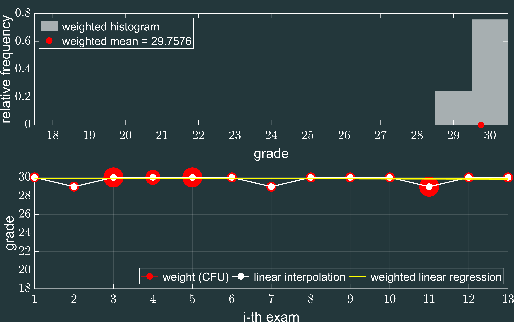

Edu:cation (3/4) |
|
| ⇦ |
2017-2021 ― Master DegreeLM-25 Electrical and Automation engineering @ University of Florence, Santa Marta.Specialization in Automation.
|
Gradegrams(over all 13 exams)
|
⇨ | |||||||||||||||||||||||||||||||||||||||||||||||||||||||||||||||||||||||||||||||||||||||||||||||||||||||||||||||||||||||||||||||||